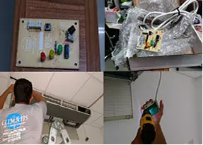

Manutenção de ar-condicionado em Curitiba
Manutenção preventiva e corretiva com diagnóstico técnico, limpeza, testes de funcionamento e orientação clara para residências, comércios e empresas.

Manutenção com ética, responsabilidade e clareza
Com a Climátis, os serviços de manutenção preventiva e corretiva de ar-condicionado são realizados de forma transparente, com responsabilidade e ética.
Fazemos testes detalhados para detectar o real defeito da máquina e indicar a solução adequada para cada equipamento.
A manutenção preventiva ajuda a preservar desempenho, reduzir consumo de energia, evitar vazamentos e prolongar a vida útil do aparelho.
Preventiva, corretiva e PMOC
A Climátis atende equipamentos residenciais, comerciais e sistemas de maior porte, com rotina técnica compatível com o uso e o ambiente.
 Manutenção preventiva
Limpezas e verificações periódicas para prevenir vazamentos, panes e perda de desempenho.
Manutenção preventiva
Limpezas e verificações periódicas para prevenir vazamentos, panes e perda de desempenho.
 Manutenção corretiva
Diagnóstico técnico e reparo para equipamentos com falha, mau funcionamento ou baixa refrigeração.
Manutenção corretiva
Diagnóstico técnico e reparo para equipamentos com falha, mau funcionamento ou baixa refrigeração.
 PMOC empresarial
Plano obrigatório para edifícios de uso público e coletivo, conforme a Lei 13.589/2018.
PMOC empresarial
Plano obrigatório para edifícios de uso público e coletivo, conforme a Lei 13.589/2018.
Problemas causados pela falta de manutenção
A falta de manutenção regular pode afetar conforto, saúde, segurança e consumo de energia.
Alguns itens verificados na manutenção
Durante a visita técnica, a Climátis avalia pontos essenciais para segurança, rendimento e vida útil do sistema.
Sistema frigorígeno
- Verificação de vazamento de fluido refrigerante
- Verificação do diferencial de temperatura entre retorno e insuflamento
- Verificação do isolamento térmico das tubulações
Limpeza e ar
- Limpeza das unidades interna e externa com máquina de limpeza à água ou vapor
- Medição da vazão de ar
- Controle de vírus, bactérias e fungos
Elétrica e funcionamento
- Checagem do compressor e capacitor
- Verificação de disjuntores, tomadas, rabichos e plugs
- Medição de tensão e corrente
Manutenção preventiva e PMOC para vários tipos de equipamentos
A manutenção preventiva pode e deve ser aplicada em todo tipo de aparelho de climatização. Em edifícios de uso público e coletivo, o PMOC é obrigatório pela Lei 13.589/2018.
Precisa de manutenção de ar-condicionado?
Entre em contato para orçamento e agendamento de visita técnica. Conte qual é o equipamento, sintoma e local de atendimento.